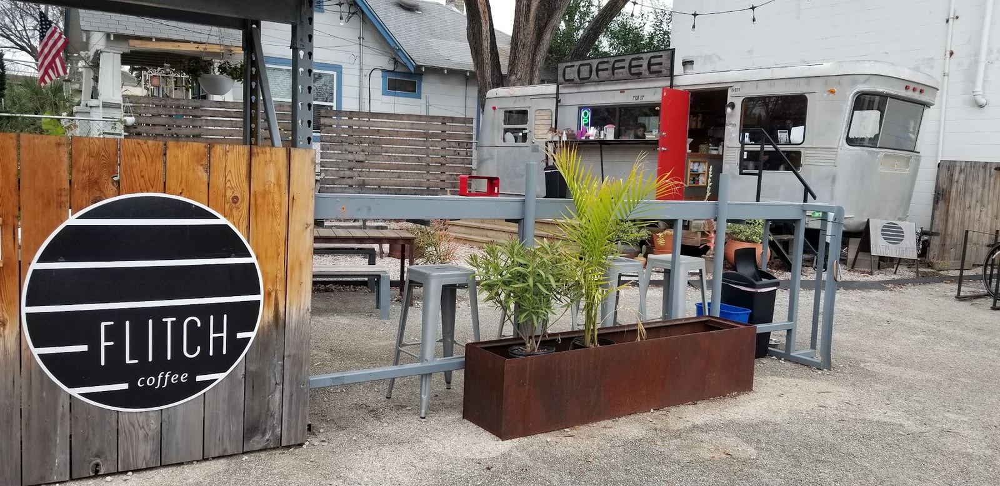

Home / Visit
Visit Flitch Coffee in East Austin
Find the silver 1952 Spartan trailer at the corner of Holton & Tillery, on the lot we share with Harvest Lumber Company. Open every day, 7am to 3pm.
Hours
| Monday | 7:00 am – 3:00 pm |
| Tuesday | 7:00 am – 3:00 pm |
| Wednesday | 7:00 am – 3:00 pm |
| Thursday | 7:00 am – 3:00 pm |
| Friday | 7:00 am – 3:00 pm |
| Saturday | 7:00 am – 3:00 pm |
| Sunday | 7:00 am – 3:00 pm |

good to know
Before you come by
- It’s all outdoors. Order at the trailer window, then grab a seat under the big covered patio or the trees.
- Dogs and kids welcome. People-friendly, pup-friendly and kid-friendly, with free water out.
- Breakfast tacos. Pueblo Viejo tacos at our window from 7am until sold out, plus the Pueblo Viejo truck on the lot.
- Parking. Park on the lot we share with Harvest Lumber Company.
- Quick line. Reviewers say the wait is “never long.”
- Compost. Cups and lids are compostable; there are sorting bins by the trailer.
the neighbors
Our corner of Tillery
visiting questions
Visit FAQ
Is there parking at Flitch Coffee?
Yes, there's parking right on the lot we share with Harvest Lumber Company and our neighbors. Reviewers regularly mention there's plenty of it.
Can I bring my dog?
Please do. Flitch is outdoors and pup-friendly, there's complimentary water, and the patio has plenty of shade.
Is Flitch good for working or meeting friends?
On a nice day, yes: there's lots of covered seating, long tables and quiet mornings. Reviewers like it for meeting friends and getting a little work done.
Are you ever closed?
We're open 7am–3pm every day. We usually take a short summer break in early August and occasionally close for weather. Dates are always posted on Instagram.
Is Flitch kid-friendly?
Yes. Kids have their own drinks on the menu (hot chocolate, steamers, lemonade, chocolate milk, juice boxes) and room to move around. See kid-friendly drinks.
See you at Holton & Tillery.
7am–3pm, every day of the week.